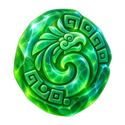
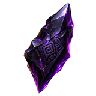
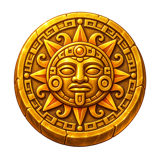

Crónicas de Guatemala
Guardianes del Mayab
Tu crónica te espera
Inicia sesión para conservar tus batallas, puntos y nivel.
Activa tu cuenta
Enviamos un código de seis dígitos a tu correo.
Restablece tu contraseña
Ingresa el correo registrado. Si coincide con una cuenta, enviaremos un enlace seguro que expirará en 30 minutos.
Elige una arena
Crea una sala o solicita acceso a una partida activa. El anfitrión decidirá quién entra.
¿Cómo quieres jugar?
Combate con otros guardianes, entrena contra la máquina o avanza en tu propia crónica.

0 jades
0 obsidiana
0 oroDesbloquea guardianes
Cumple un desafío, alcanza las victorias y puntos requeridos o canjea oro del juego. Cada alternativa desbloquea al guardián.
Senderos del Mayab
Cada sendero guarda un tesoro. Cada guardián, un desafío.
Tres intentos, con cinco corazones de salud cada uno, y un punto de control antes del jefe. Los recursos recogidos y el premio se guardan al vencer por primera vez cada pantalla. Puedes repetirla por diversión.
¿Tienes un mando Bluetooth? Conéctalo al celular y pulsa un botón para detectarlo.
Conoce el poder de tu guardián
Cómo jugar con un mando Bluetooth
Mando Bluetooth: palanca izquierda o cruceta para moverte · A / ✕ para saltar y confirmar · X / □ para golpear · B / ○ o RT / R2 para lanzar · R1 / L1 para defender · Start / Options para pausar. Conecta el mando desde los ajustes del dispositivo y pulsa un botón. Requiere un mando reconocido por el navegador con distribución estándar.
Conoce los peligros del sendero
Peligros del sendero: tarántulas, serpientes, alacranes y chichicaste. Evita tocarlos; el chichicaste es una planta urticante y no puedes aplastarla saltando. Despéjala con tu poder.
Recoge oro, jade y obsidiana. Cada intento empieza con cinco corazones de salud. Tienes tres intentos y un punto de control antes del jefe. En celular, gira el dispositivo horizontalmente para jugar con ambos pulgares. También puedes usar un mando compatible. Si se desconecta durante el juego, la partida se pausa.
Teclado: ← → / A D · Espacio / W / ↑ para saltar · J / X para golpear · K / Z para lanzar poder · L / Shift para defender · P / Esc para pausar. También puedes usar los botones táctiles.
Arena de guardianes
Preparando combate…
Tu guardián entra a la arena
DualSense: palanca izquierda para moverte · ✕ salta · □ golpea · ○ / R2 lanza · R1 / L1 defiende · Options abre controles. También puedes usar los botones táctiles.
Salud arriba · Energía del escudo debajo · Mantén L / Shift o R1 para defender · P / Options para controles
La Cueva de la Fortuna
Elige un juego, conoce sus reglas y prueba tu fortuna.
Se lanzan dos dados y se suman. Ganas si eliges Bajo y sale 2–6, Siete y sale exactamente 7, o Alto y sale 8–12. El pago indicado incluye la cantidad apostada.
Elige tu augurio y coloca una apuesta.
Probabilidades: bajo/alto 41.67%, siete 16.67%. Retorno teórico: 79.17% y 91.67%.
Elige Sol o Luna. La moneda sagrada tiene la misma probabilidad de caer en cualquiera de sus dos caras. Si aciertas, recibes ×1.90 de tu apuesta, incluida la cantidad apostada.
Elige una cara de la moneda.
Probabilidad de ganar: 50%. Retorno teórico: 95%.
Presiona Girar los rodillos. Ganas únicamente cuando los cuatro símbolos mayas son iguales. Un giro ganador paga ×200 e incluye la apuesta original.
Haz tu apuesta y despierta la máquina.
Símbolos: jaguar, quetzal, jade, templo, sol y cacao. Probabilidad de premio: 1 en 216. Retorno teórico: 92.59%.
La baraja tiene cuatro linajes con cartas del 1 al 10. Después de barajar se reparte una carta para ti y otra para el Guardián. La carta más alta gana; una victoria paga ×1.90 y un empate devuelve toda la apuesta. Los pagos fraccionarios se redondean al entero más cercano y toda victoria garantiza al menos +1 de ganancia.
DEL MAYAB
El Guardián espera tu desafío.
Linajes: Jaguar, Quetzal, Ceiba y Templo. Retorno teórico aproximado: 95.5%.
Estos juegos utilizan únicamente recursos virtuales. No existe dinero real ni retiro de premios.
Misiones del Mayab
Completa cada misión para abrir el siguiente sendero. Las recompensas únicas se entregan al vencer por primera vez.
Elige a tu guardián
Forma un vínculo y entra a la arena con los jugadores de tu sala.
Elige un skin
Encuentra a tu rival
Acércate a otro guardián para iniciar un duelo.
Invoca tus fuerzas
Elige cinco ataques. Cada elemento domina a otro.
0
victorias0
victorias